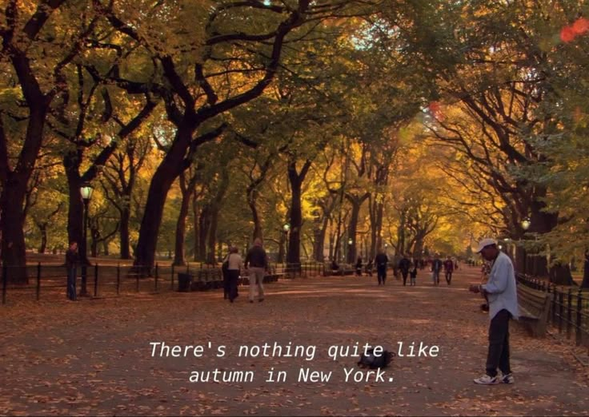
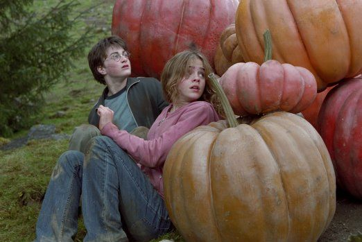

I'm so glad I live in a world where there are Octobers. -Anne of Green Gables
The season of leaves changing colors, the days getting darker, and colder this is fall/autumn. Also known as the more popular season, but how can we take advantage of this cozy season? Well here's a few of my ideas... grab a book and go to your favorite park, people watch, take in the bright colors, and soak in the warm sun. Make a cup of coffee or tea and watch classic autumnal movies (as listed below). Go out for brunch with your friends and walk around (breaksfast is the best food). Most importantly EXPLORE, WRITE, and ENJOY ART!!!

the perfect time for movies!

One of the best things about the weather getting chiller is staying inside and watching movies! For example, the Harry Potter series is great to watch as the leaves start to fall. Another favortie of mine is The Lord Of The Rings, a perfect time for an adventure. If you don't enjoy movies Gilmore girls, and Over The Garden Wall are good cozy options. Perhpas, you prefer reading at the moment I am reading the Shadow of The Wind, its dark and mysterious great for this season. Take a look below for some movie and book options!